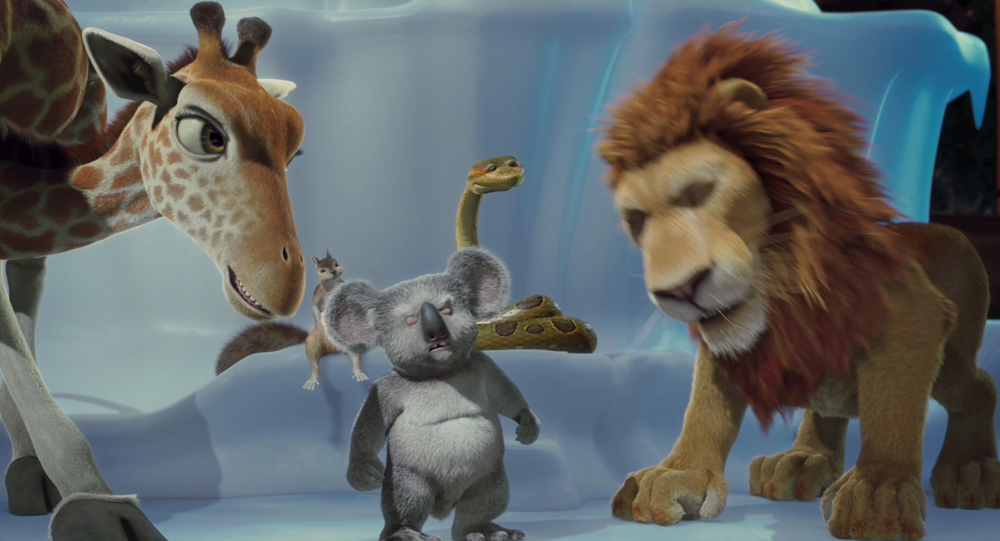
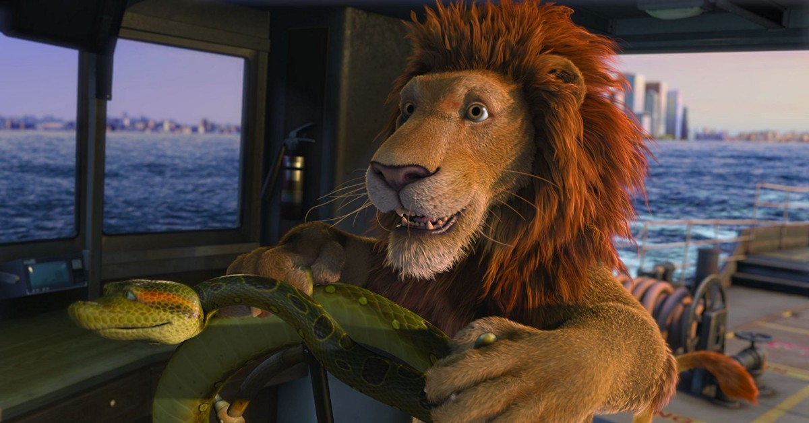
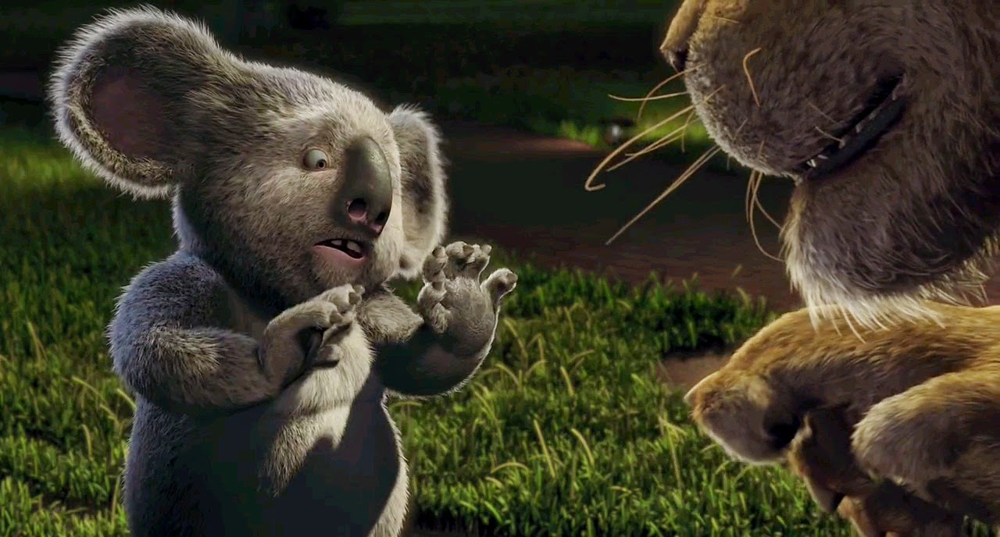
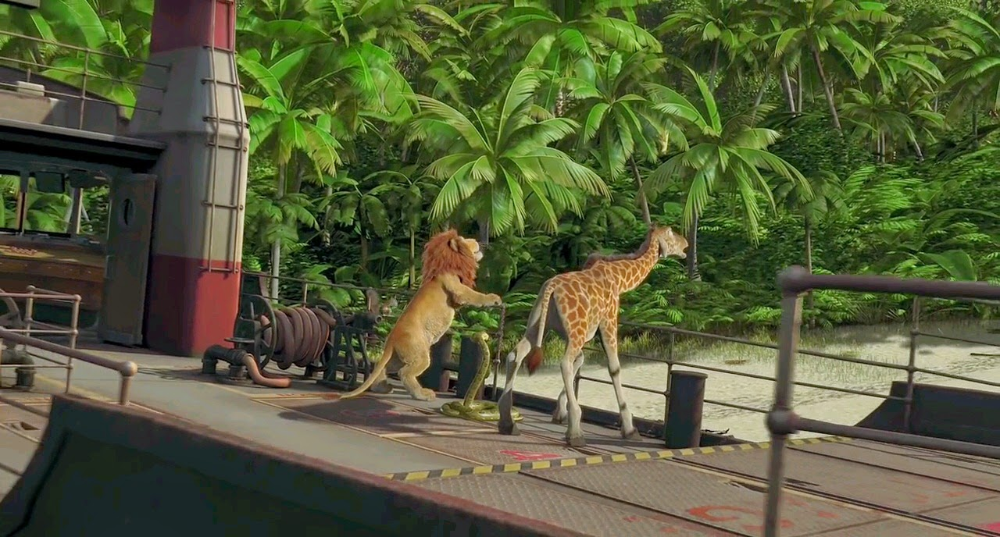

STORY LINE
A group of teens must survive after a crash leaves them stranded. There's just one twist to this thrilling drama - these girls did not end up on this island by accident.
TITLE : THE WILD
DIRECTOR : Sarah Streicher
STARS
Sophia Ali
Shannon Berry
Jenna Clause
Reign Edwards
David Sullivan
Genres: ADVENTURE
AGE RESTICTION : 13PG
DURATION TIME : 2h:30 min
a brief synopsis of the movie
Strayed meets a hiker named Greg (Kevin Rankin) who agrees to meet her at Kennedy Meadows, California. Upon arrival, she meets a camper named Ed (Cliff DeYoung) who helps Strayed strategically lighten her overweight backpack and convinces her to replace her undersized hiking boots with a new pair, to be delivered to a future stop on the trail. Strayed continues her hike into the Sierra Nevada despite Greg's warnings of deep snowfall. After removing a boot to remove a loose toenail, the boot accidentally falls down an inaccessibly deep slope, forcing her to continue the journey wearing sandals reinforced with duct tape. Strayed's best friend Aimee (Gaby Hoffmann) sends her provisions to stops along the trail, including letters that congratulate her on her progress. Strayed also receives letters from her ex-husband Paul along the way.
SHOWING TIME3:00pm
DATE15 february 2021
   